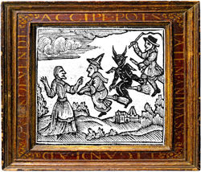
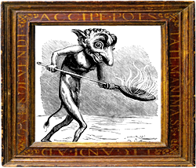
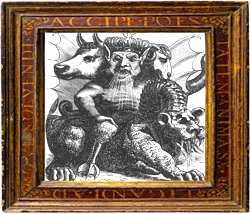
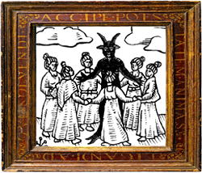
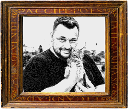
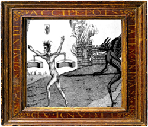
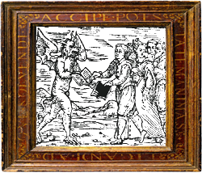
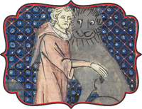
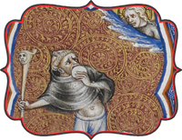
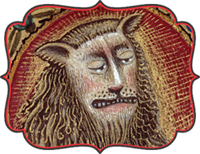

Вот и ты здесь оказался с нами, дорогой наш человек! Рады, очень рады! Мы являемся Курортом, зоной отдыха, рекреации, позитива, территорией любви к жизни! А не то, что писали в большой скучной чёрной книжке с крестом на обложке.
Наша Миссия - вернуть вашим близким радость обычной жизни: работы, рутины, капризов детей, политических шоу, вечной нехватки денег и уверенности в завтрашнем дне, а главное - общения с вами!
Если для вас очевидно что ваш ближний скуксился, приуныл, слишком много ест с горя, готовит коктейли Вени Ерофеева и жалуется на серую унылую жизнь или напротив - лютует, наглеет, унижает вас, стремиться обладать кольцами на всех пальцах и золотыми коронками на зубах, которых даже не планировалось - вы пришли по верному адресу!
Мы - дружная команда специалистов чувственных практик, играючи, ровно за 7 дней вернём клиенту Радость жизни!
Благодаря запатентованной технологии замедления времени с помощью Клубничного Варенья в Песочных Часах, ваша обычная земная неделя для клиента в нашем уютном мирке будет тянуться от 1000 до 1 000 000 лет (судя по отзывам клиентов).
Если вы у нас окажетесь вновь, после того как старина Святой Пётр, спрячет ключ поглубже в тунику и махнёт рукой куда-то вниз при встрече с вами, у вас будет возможность пройти обучающий тысячелетний экспресс курс тестировщика котлов, стать одним из Легиона Соискателей и в перспективе ближайшей вечности войти в Ай-Яй-Яй Ти!
"Мы не Налоговая - у нас всё по-честному!"
Невозможно отказаться от наших услуг! Это не потому что они такие замечательные, а просто - нельзя. Вашего друга ждёт увлекательная программа, смотрите и не завидуйте!
Наши услуги |
|
|---|---|
|  | Первое с чем всегда встречается наш гость - легендарная служба Трансфера в Ад! Начинается всё с появления развесёлого летучего отряда, которой, шутя и балагуря, увлекает за собой вашего дорогого знакомого и доставляет его прямяком ко Свинцовому Ковчегу. Затем его ожидает затяжной морской круиз через Море Забвения и прибытие на Первый круг нашего курорта - неподрожаемое Серое Уныние! |
|  | Именно здесь готовит самый настоящий Адский шеф, а не тот, что по телеку. Произведения его кулинарной фантазии шокируют даже старых работников столовой. И разумеется от этих блюд невозможно отказаться, все трапезы проводятся исключительно насильсно. Пальчики оближешь! Их у нас полно! |
|  | Далее блок развлекательных услуг. Первая из них это неповторимый контактный Зоопарк с животными, которых мы пересобираем каждый день! Скучно точно не будет! Мы сами понятия не имеем чего ждать от этих тварей! Животных не кормить, они мирно едят друг друга, нечего вмешиваться в пищевые цепочки! |
|  | Ничто так не украшает тёплые вечера в Аду как традиционные местные пляски! Пропустить через себя жаркие ритмы всем гостям поможет наш неподражаемый хореограф Мыкола Вискаридзе! Ещё никто не уходил с танцпола на СВОИХ двоих, если вы понимаете о чём я! |
|  | Но не танцами едиными вечно мучается человек! Наша музыкальная душа, Сергей Жуков, проводит бесконечный репит-концерт с одной единственной, но самой любимой нашей песней “Забирай меня скорей!” Эта услуга признана самой мучительной среди 98% наших гостей! |
|  | А в перерывах между процедурами наши самые весёлые и изобретательные аниматоры не дадут заскучать! Чего только они не придумывают! За дополнительную плату вы будете получать наиболее удачные фотографии вашего знакомого во время игр прямо на e-mail! |
|  | И конечно же, к необходимым услугам относится наша старейшая во вселенной библиотека! Полное собрание Дарьи Донцовой, новейшие книги тиктокеров, труды по высшей математике и всё что просто страшно представить, разумеется, обязательно к прочтению! |
Отзывы Благодарных Душ |
|
|---|---|
|  | После посещения Контактного Зоопарка в Аду я понял как на самом деле сильно люблю своего Котика, хоть он и писает под ворота дворца и порой съедает соседа, из-за чего начинается война и гибнут тысячи невинных! Но он просто милашка по сравнению с тем что я видел! Спасибо тебе, о неизвестный Друг, который отправил меня туда! |
|  | Вечность прошла незаметно, возможно оттого что я так не хотел возвращаться на землю, где за мной постоянно наблюдает тёща из-за куска оторванных обоев…Но благодаря чудесному Адскому шефу, я научился заедать любой страх чем-нибудь круглым, как на этом фото, я закусываю крышкой от ночной вазы. Также очень помогает одноликий чупа чупс, комплимент от Шефа, на который смотреть куда приятнее чем на тёщу! |
|  | До путешествия в Ад люди постоянно говорили мне что я - лев, и чтобы я уходил! Меня это очень напрягало и жизнь была не в радость, ведь другие люди меня хотели порой даже поколотить. За что? обидно в общем. Но побывав на Курорте, мне дали понять(попробовать) как вкусны бывают люди, особенно пьяные! У меня просто глаза открылись, ну и пасть тоже. Теперь я радуюсь жизни вместе с людьми, особенно по пятницам и в Новый год! До встречи в Аду, пьяницы! |